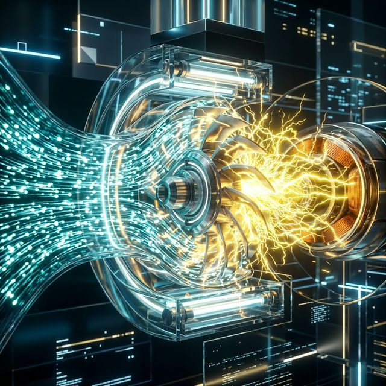
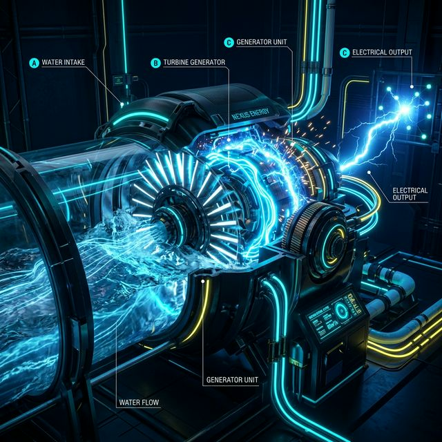
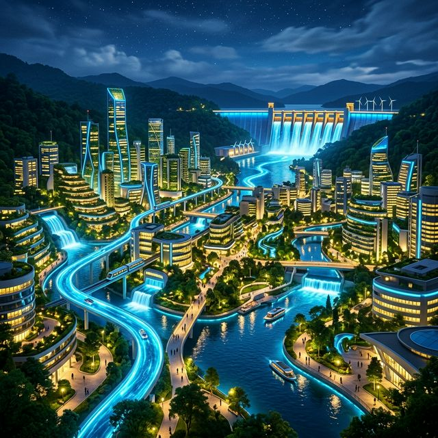

Subtítulo
El agua que corre tiene energía gracias a la física de fluidos y al movimiento (cinética). Esta fuerza es el combustible inicial de nuestro sistema.
La corriente de agua golpea y hace girar las aspas de nuestra turbina, convirtiendo el empuje en rotación estructurada (mecánica pura).
Un motor acoplado a la turbina usa la inducción electromagnética para transformar este giro constante en electrones aprovechables.
Todo el funcionamiento se resume en dos conceptos fundamentales de la física académica:
Este sistema demuestra que la generación hidroeléctrica no está limitada a mega-construcciones como presas monstruosas que inundan grandes pedazos de terreno biológico. Al escalar esta tecnología a nivel doméstico y comunitario ("Micro-Hidroeléctricas") se puede brindar electricidad autónoma a zonas rurales marginadas solo aprovechando el caudal continuo del río de una manera gentil, impulsando la igualdad de derechos básicos, respetando ecosistemas y promoviendo el conocimiento libre sin depender del carbón ni liberar CO2.
Nuestro proyecto se alinea de forma directa con los siguientes ODS de las Naciones Unidas:


